Галерея
Наведіть мишею на фото, щоб побачити підпис. Клікніть для перегляду у повному розмірі.
Червона доріжка
Найзначніші виходи Sydney на найгучніших церемоніях Голлівуду — від People's Choice до Vanity Fair Oscar Party.


Кінофестивалі
Sydney на світових фестивалях — прем'єри власних фільмів та представлення проєктів від «Reality» до «Immaculate».


Промо, обкладинки та кампанії
Обкладинки журналів, beauty-кампанії та музичні кліпи — Sydney як обличчя епохи.


Архів фільмографії — повний каталог
Кадри, постери та події з кожного проєкту Sydney — від першої ролі у 2009-му до прем'єр 2025-го. Клікніть на будь-який кадр для перегляду у повному розмірі.
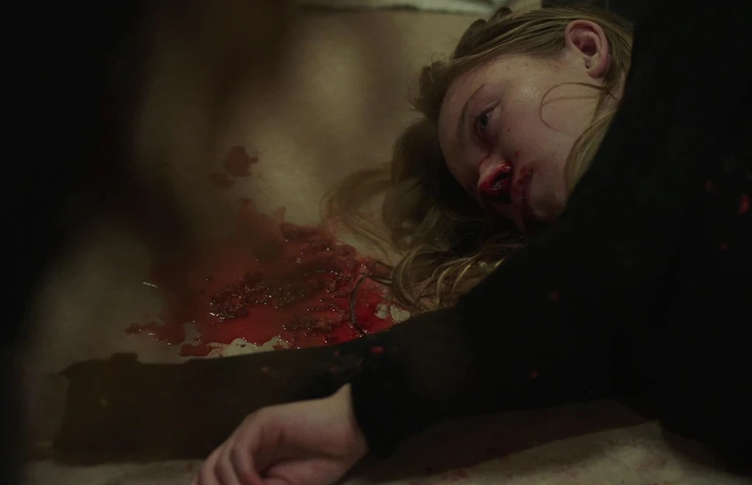
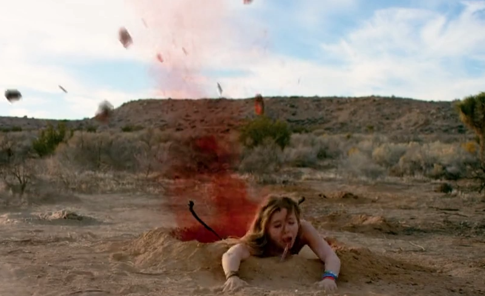
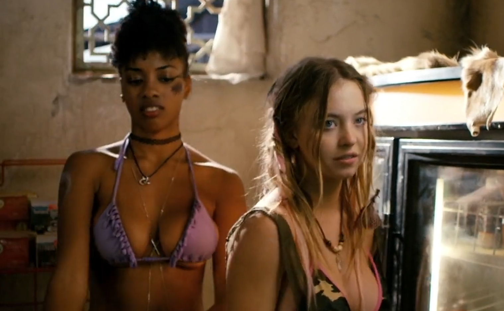


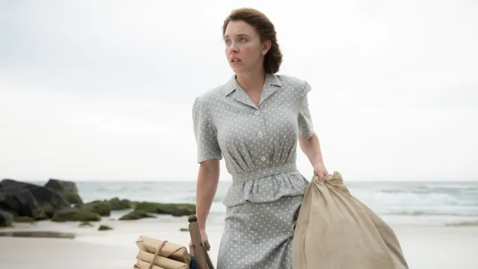


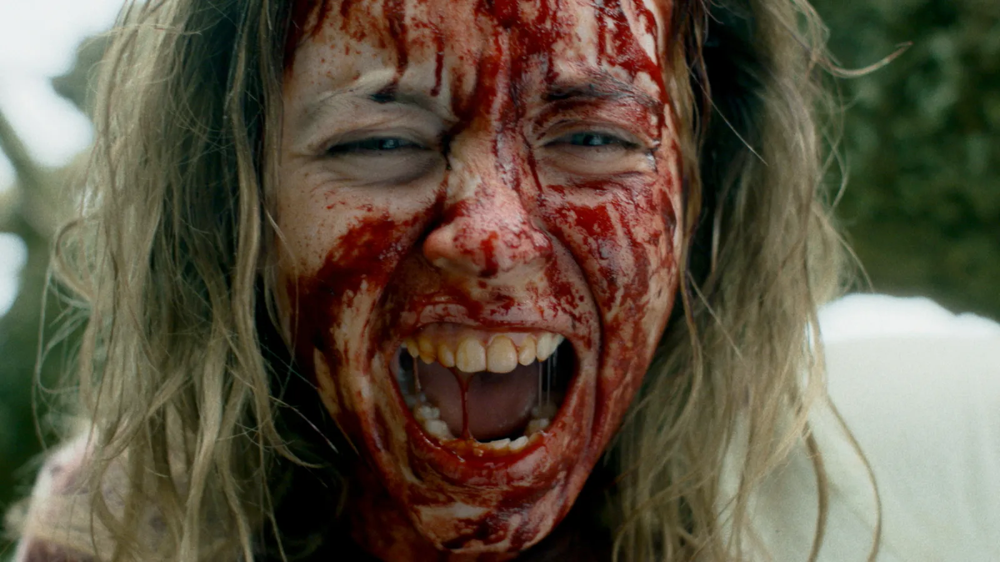


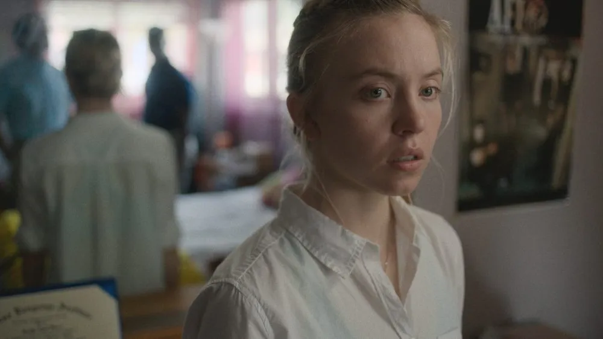
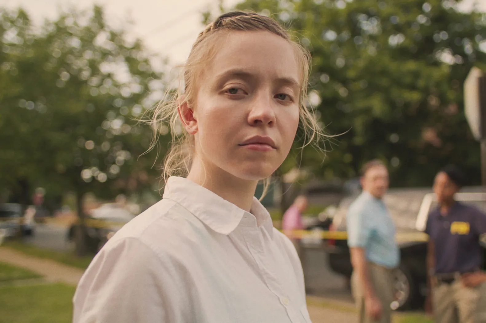


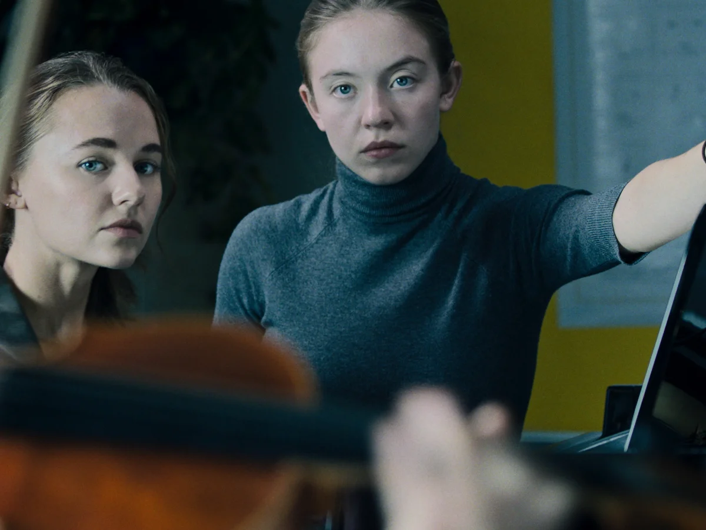
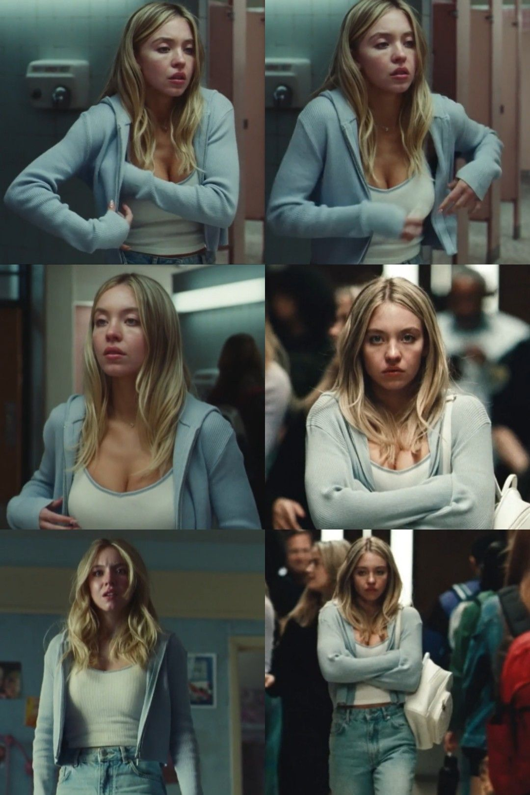
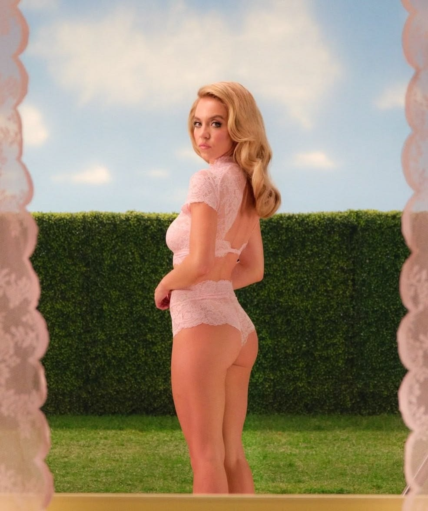


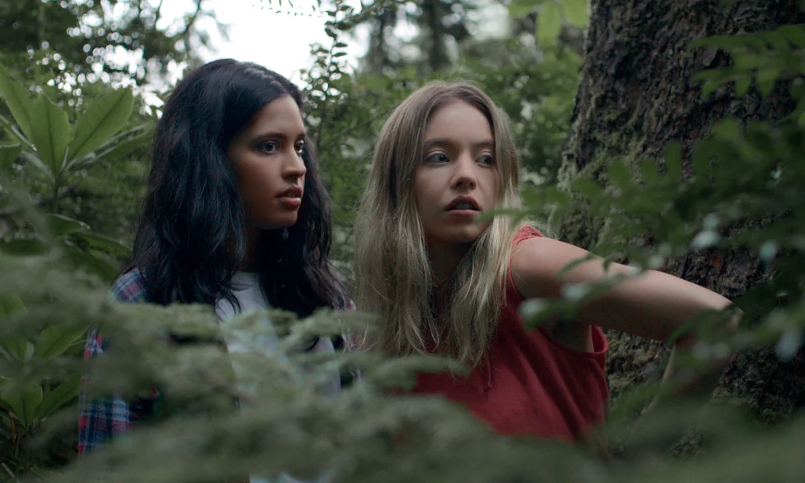


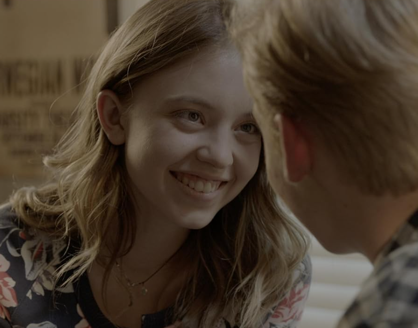
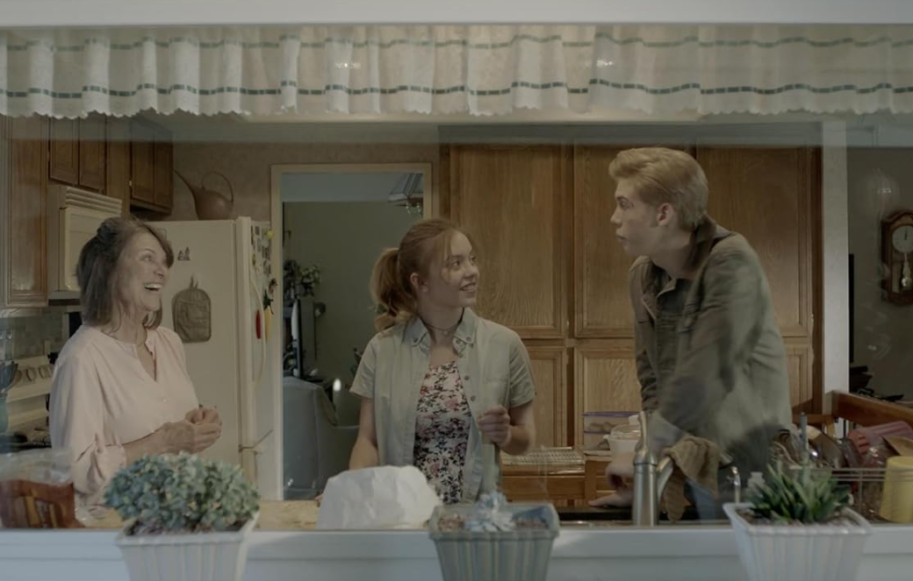
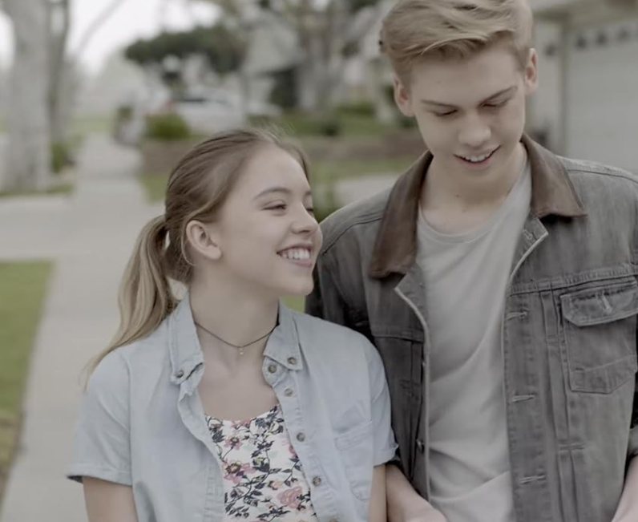
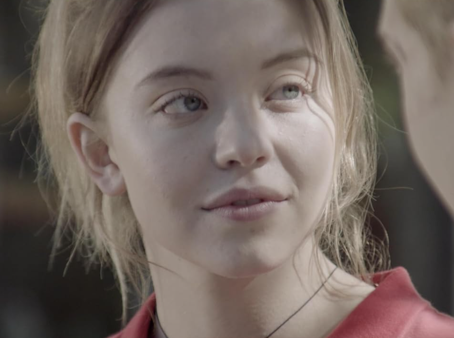